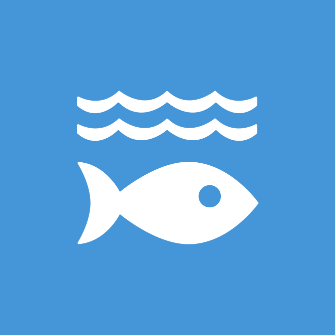
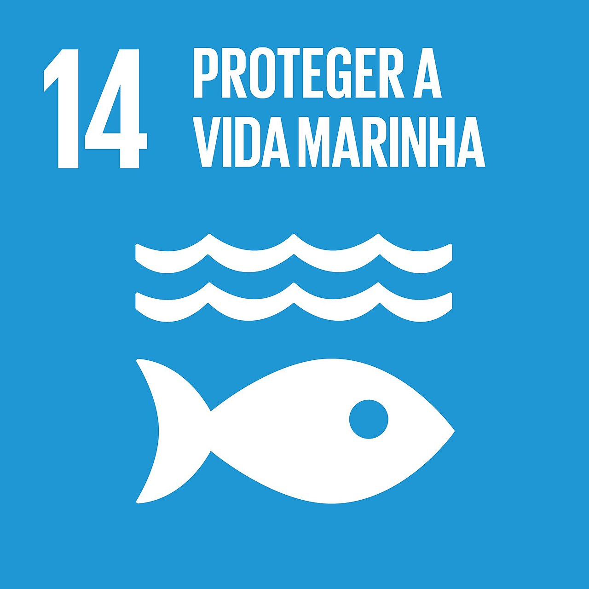
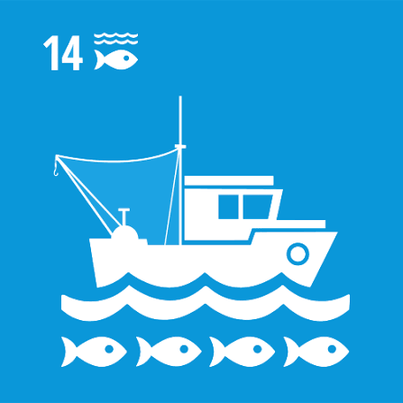
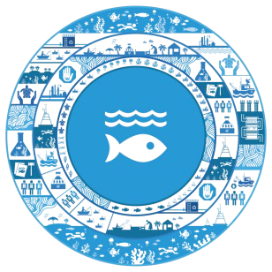
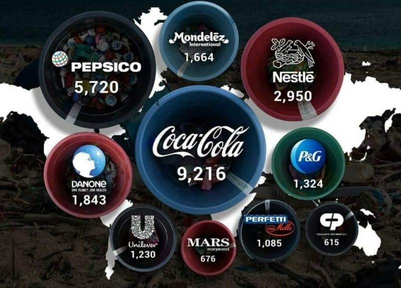
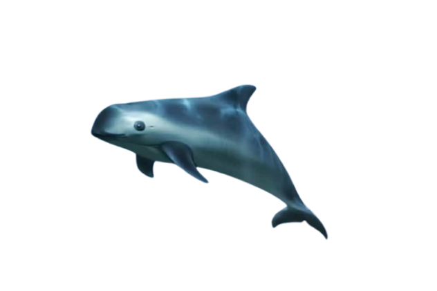
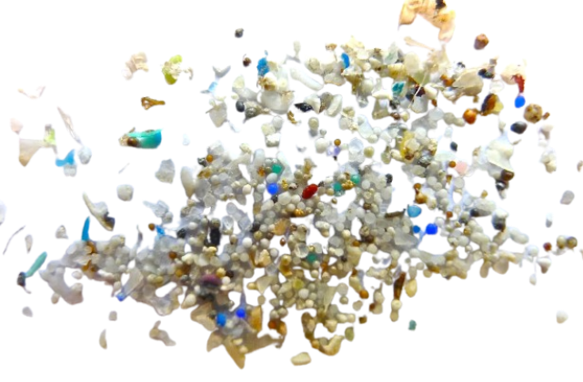

Objetivo de Desenvolvimento Sustentável 4 (ODS 4), criado pela Organização das Nações Unidas, tem como objetivo garantir a conservação e uso sustentável dos oceanos, dos mares e dos recursos marinhos para o desenvolvimento sustentável.


A ODS 14 tem como objetivo conservar e promover o uso sustentável dos oceanos, mares e recursos marinhos para o desenvolvimento sustentável. Suas principais contribuições incluem a redução da poluição marinha, a proteção dos ecossistemas costeiros e marinhos, o combate à pesca ilegal e à sobrepesca, além da conservação da biodiversidade aquática. Em projetos, também incentiva ações de preservação dos ambientes marinhos, uso sustentável dos recursos naturais, educação ambiental, recuperação de áreas degradadas e fortalecimento de políticas de gestão dos oceanos, contribuindo para a proteção da vida marinha, o equilíbrio ambiental e o desenvolvimento sustentável das comunidades.


- Indústria de alimentos

- Vaquita-Marinha (Phocoena sinus)

- Microplástico